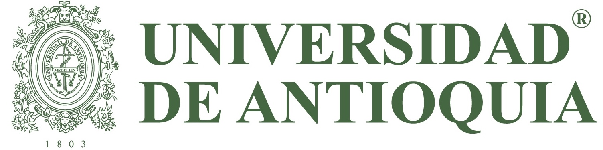

<nav class="navbar navbar-expand-md navbar-light  " >

  <button class="navbar-toggler hidden-sm-up" style= "color:var(--7465c);margin: 5px;"type="button" data-toggle="collapse" (click)="isNavbarCollapsed = !isNavbarCollapsed"
    data-target="#navbarsDefault" aria-controls="navbarsDefault" aria-expanded="false" aria-label="Toggle navigation">
    <i class="fa fa-bars" style="color:rgb(255, 255, 255);"></i>
  </button>
  <div class="logo">
    <a routerLink="home">
      
    </a>

  </div>
  <div class="profile navbar-brand">
    <ul>
      <li ngbDropdown>
        <a id="id01" ngbDropdownToggle>
          <span class="fa-stack fa-1x">
            <i class="fas fa-circle fa-stack-2x" style="color:var(--7465c);"></i>
            <i class="fas fa-user fa-stack-1x fa-inverse"></i>
          </span>
        </a>
        <div class="dropdown-menu" aria-labelledby="id01" ngbDropdownMenu>
          <a class="dropdown-item" (click)="logout()">Salir</a>
        </div>
      </li>
    </ul>
  </div>

  <div [ngbCollapse]="isNavbarCollapsed" class="collapse navbar-collapse" id="navbarsDefault">
    <div class="navbar-brand " href="#">
      <ul>
        <li ngbDropdown>
         <a class="nav-link" id="comisiones" ngbDropdownToggle style="color:rgb(248, 248, 248);">Comisiones</a>

        <div class="dropdown-menu" ngbDropdownMenu aria-labelledby="comisiones">
          <a class="dropdown-item" routerLink="comisiones/crear-comision">Crear</a>
        </div>
        </li>
      </ul>

    </div>
    <div class="navbar-brand">
      <ul>
        <li ngbDropdown>
         <a id="comisiones" ngbDropdownToggle style="color:#fff;">Permisos</a>

        <div class="dropdown-menu" ngbDropdownMenu aria-labelledby="comisiones">
          <a class="dropdown-item" routerLink="permisos/crear-permiso">Crear</a>
        </div>
      </li>
      </ul>
    </div>
    <div class="navbar-brand">
      <ul>
        <li ngbDropdown>
         <a id="comisiones" ngbDropdownToggle style="color:#fff;">Dedidaciones</a>

        <div class="dropdown-menu" ngbDropdownMenu aria-labelledby="comisiones">
          <a class="dropdown-item" routerLink="dexclusiva/carta-inicio">Crear dedicación exclusiva</a>
        </div>
      </li>
      </ul>
    </div>

  </div>


</nav>
